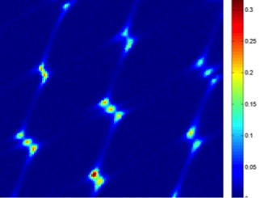
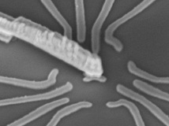
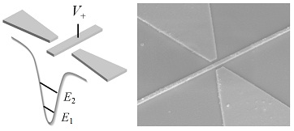

|
RESEARCH OVERVIEW

The group is focused on studying the transport properties of quantum devices, which are fabricated on a high mobility GaAs/AlGaAs semiconductor wafer.
We design and fabricate unique quantum devices by using Quantum Point Contact, Quantum Dot, Aharonov-Bohm interferometers and etc. as building blocks.
We are especially interested in studying quantum entanglement and many body interactions in qunatum devices. Also, we are developing a new type of logic gates
by exploiting the quantum transport nature of quantum point contacts. Finally we are developing precision measurement systems to study shot noise, cross correlation
and ultra low level current measurement and etc.
• Quantum entanglement
• Ondemand electron entangled pair generation
• Many body interactions in quantum dot system
• Frustated states in a Triple Quantum Dot.
• Logic gates based on Quantum Point Contact
• Development of precision transport measurement systems
RECENT RESULTS
Charge Frustration in a Triangular Triple Quantum Dot

We experimentally investigate the charge (isospin) frustration induced by a geometrical symmetry in a
triangular triple quantum dot. We observe the ground-state charge configurations of sixfold degeneracy,
the manifestation of the frustration. The frustration results in omnidirectional charge transport, and it is
accompanied by nearby nontrivial triple degenerate states in the charge stability diagram. The ?ndings
agree with a capacitive interaction model. We also observe unusual transport by the frustration, which
might be related to elastic cotunneling and the interference of trajectories through the dot. This work
demonstrates a unique way of studying geometrical frustration in a controllable way.
Reference : Physical Review Letters 110, 046803 (2013)
Quantum point contact with large subband energy spacings

Quantum point contact (QPC) with an extra metallic gate in between the split gates of a
conventional QPC was fabricated and studied. Clear conductance quantization was observed at
4.2 K when a proper positive voltage was set to the middle gate of the QPC. The maximum energy
spacing between the ground and the ?rst exited state of the QPC was around 7 meV which is at
least a few times larger than that of conventional QPCs. Using same approach, a possibility of
making a relatively clean and long 1D wire has been tested
Reference : Applied Physics Letters 100, 183502 (2012)
|
|
NOTICE
|
|
The position for Master course students is open.
Please contact us by email.
|
|
|
The position for undergraduate students who want to conduct a small project
in the lab is open for all year around.
|
COLLABORATORS
Braun Center for Submicron Research
Weizmann Institue of Science
Jeonbuk National University
Prof. Hyung-kook Choi
KAIST
Prof. Hyungsoon Choi
CULTure
Seoul Nationa University
Prof. Dohun Kim
Laboratory for integrated quantum systems
|